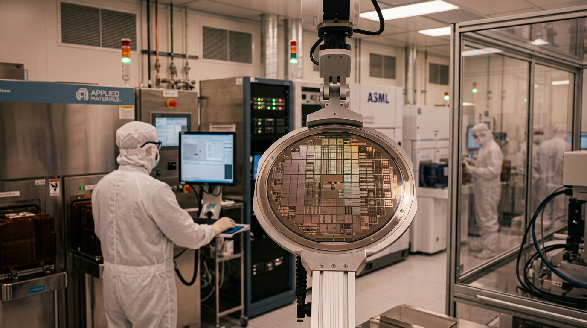

Centre for Global Law, Geoeconomics & Emerging Technologies
Rigorous research, applied intelligence, and strategic advisory at the intersection of law, economics, and emerging technology.
What We Do
The Centre produces rigorous, evidence-based research that illuminates emerging global trends and their strategic implications — flagship reports, global outlooks, policy papers, working papers, and comparative regulatory analysis.
Learn more →Translating complex global developments into focused, decision-relevant intelligence — spanning geopolitical intelligence, geoeconomic monitoring, regulatory intelligence, country risk assessment, and strategic risk monitoring.
Learn more →Supporting organisations navigating complex and rapidly evolving international environments — market-entry intelligence, geopolitical risk assessment, regulatory strategy, scenario planning, and cross-border intelligence.
Learn more →Areas of Focus
The Centre analyses how evolving configurations of power, capital, trade, energy, regulation, and technology are reshaping economies, industries, and institutions worldwide.
The evolving legal and regulatory architecture that governs international commerce, investment, technology, sanctions, and cross-border transactions across fragmented jurisdictions.
The strategic deployment of trade, investment, finance, technology, resources, and economic policy as instruments of statecraft, economic security, and international influence.
The global financial architecture, sovereign and institutional capital flows, economic restrictions, and the deepening nexus between capital allocation and geopolitical risk.
Energy security, global markets, critical minerals, transition finance, and the reconfiguration of global energy systems impacting industrial competitiveness.
Artificial intelligence, semiconductors, digital economies, autonomous systems, cyber policy, technology governance, and nascent cross-border regulatory frameworks.
An integrated multidisciplinary research agenda equipping leaders to anticipate risks, discern opportunities, and navigate global complexity.
Priority Sectors
Applied research across the sectors where geopolitical, regulatory, technological and economic forces increasingly converge.
Latest Insights

FeaturedAn examination of India's evolving role within global technology value chains, semiconductor ecosystems, and digital governance frameworks — and what this means for businesses, investors, and policymakers navigating the new technology order.
 Intelligence Brief
Intelligence Brief
How evolving sanctions regimes are reshaping cross-border commerce, investment flows, and corporate compliance frameworks.
 Policy Paper
Policy Paper
The intersection of energy transition and mineral supply chains — risks, dependencies, and strategic opportunities.
Geographies & Strategic Corridors
India constitutes the Centre's principal geographic anchor. Research examines India's evolving role in global trade, investment, technology, energy, defence, pharmaceuticals and critical supply chains, together with its relationships with South Asian neighbours and major global partners.
The Indo-Pacific remains a core area of focus given its centrality to global trade, maritime connectivity, technology, manufacturing and strategic competition — spanning China, Japan, South Korea, Taiwan, and the ASEAN economies.
ASEAN economies are increasingly pivotal as beneficiaries of supply-chain diversification, digital economy growth, and strategic competition between major powers. The Centre tracks regulatory developments, investment flows, and connectivity frameworks across the region.
The Gulf region is undergoing profound economic diversification, expanding its role as an investment hub, energy corridor, and technology adopter. The Centre examines the strategic partnerships, sovereign investment flows, and regulatory evolution shaping the region.
Europe remains a critical axis for global regulatory standard-setting, investment, and strategic autonomy. The Centre tracks EU regulatory evolution, trade policy, technology governance, and the continent's shifting economic relationships with Asia and the Indo-Pacific.
North America's role as a technology leader, capital market anchor, and regulatory pace-setter has significant global implications. The Centre examines US trade and technology policy, transatlantic relations, and North America's position in global supply chain reconfiguration.
Africa is an increasingly important geography for critical minerals, energy resources, demographic growth, and infrastructure development. The Centre tracks investment flows, resource governance, and Africa's evolving connectivity with India, the Gulf, and Asia.
Latin America is emerging as a critical geography for nearshoring, critical minerals, energy resources, and as a node in the reconfiguration of global supply chains. The Centre examines regional investment dynamics, trade frameworks, and strategic economic partnerships.
The Centre tracks the corridors that increasingly define global trade, investment, and connectivity — routes along which goods, capital, energy, technology, and strategic influence flow and converge.
Who We Engage With
Supporting organisations as they navigate international markets, regulatory change and geopolitical uncertainty with clarity and strategic foresight.
Providing targeted intelligence on markets, sectors, investment environments and emerging risks to inform capital allocation and portfolio strategy.
Supporting policy research, comparative analysis and international engagement to strengthen evidence-based decision-making.
Contributing research and informed perspectives on global governance and the management of cross-border challenges.
Developing sector-specific research, intelligence and policy insights that advance collective understanding and coordinated responses.
Advancing collaborative research, knowledge exchange and academic dialogue on issues of shared strategic importance.
Creating carefully curated platforms for dialogue on emerging global and regional developments, foreign policy, and cross-border cooperation.
Upcoming Events
About the Centre
The Centre rigorously examines the profound transformations underway in global power structures, regulatory frameworks, capital flows, energy systems and technological innovation, assessing their impact on markets, institutions and the international order. It converts these complex developments into precise, actionable intelligence for businesses, governments and institutional stakeholders.
Learn about the Centre →"Situated at the nexus of law, geoeconomics, and emerging technologies, the Centre equips businesses, governments, investors, and institutions to anticipate emerging risks, discern opportunities, and navigate an increasingly intricate global landscape with clarity and confidence."
— SLR Centre for Global Law, Geoeconomics & Emerging Technologies